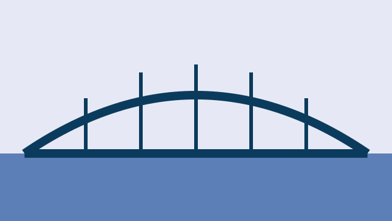

News / Infrastructure
Pellwick opens a pedestrian bridge with a fountain of lanterns
The Candlewharf Footbridge links two invented neighbourhoods and carries more bicycles than anyone planned for.
Invented regional stories from the fictional province of Ardenmere in the Republic of Veloria.

News / Infrastructure
The Candlewharf Footbridge links two invented neighbourhoods and carries more bicycles than anyone planned for.
News / Community
Borrowers return seeds each autumn, along with a note about how the plants fared.
News / Community
Eleven invented choirs, one borrowed piano, and a rule that nobody may clap before the last note fades.
News / Education
Students log wind speed with a bicycle wheel and a cereal-box dial.
News / Local life
Visitors learn the satisfying crunch of a hand punch and leave with a perforated souvenir.
News / Transport
A new fold-out card uses bigger numerals and a colour-blind-friendly palette.
News / Local life
Forty volunteers, nine buckets of paint, and a brief dispute over teal.
News / Community
Volunteers describe the patience required to coax old cassettes into playing.
No stories match those filters. Try another word or reset the filters.